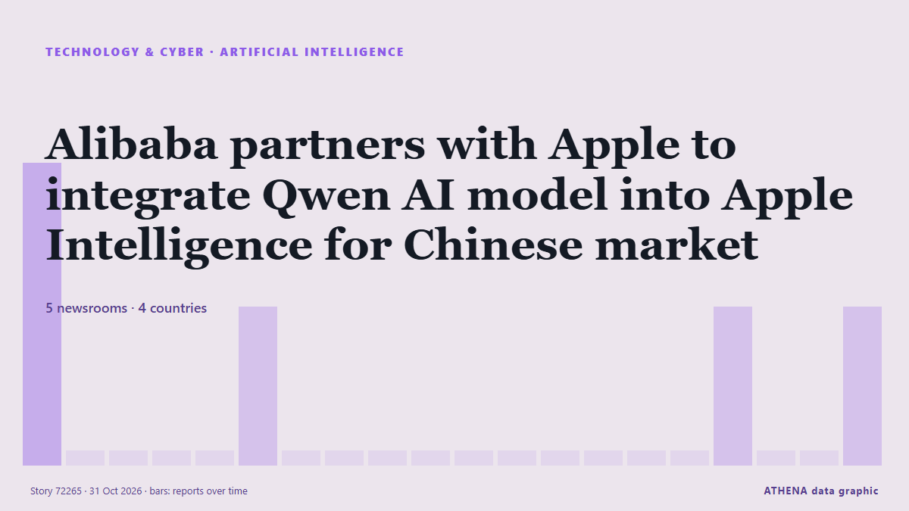

الذكاء الاصطناعي
| 18 أكتوبر | 0 |
|---|---|
| 19 أكتوبر | 1 |
| 20 أكتوبر | 0 |
| 21 أكتوبر | 0 |
| 22 أكتوبر | 0 |
| 23 أكتوبر | 0 |
| 24 أكتوبر | 0 |
| 25 أكتوبر | 0 |
| 26 أكتوبر | 2 |
| 27 أكتوبر | 3 |
| 28 أكتوبر | 3 |
| 29 أكتوبر | 9 |
| 30 أكتوبر | 5 |
| 31 أكتوبر | 1 |
تُعرض العناوين بالإنجليزية كما نُشرت.

Alibaba partners with Apple to integrate Qwen AI model into Apple Intelligence for Chinese market
Feature to launch with official iOS 27.3 release in December. من Anadolu Agency (English)
Dartmouth provost resigns over AI use in published articles
Dartmouth College Provost Santiago Schnell resigned Wednesday after a faculty-led investigation concluded he used artificial intelligence (AI) to substantially alter his published writing, violating… من VnExpress International
Cash is king as investors draw new battle lines in AI spending boom
Microsoft shares rose more than 3% in after-hours trading, while Alphabet plunged nearly 10%, as investors favoured companies profiting from AI over those struggling to contain its costs. من Free Malaysia Today
Reddit will make users log in as Google’s AI search cuts its traffic
Reddit is moving to a “logged-in-only experience”, chief executive Steve Huffman told shareholders on Thursday. من The Next Web
HHTD 26: Foxconn Chairman highlights processing and vertical integration strengths
Foxconn Chairman Young Liu said at the opening of Hon Hai Tech Day 2026 (HHTD26) on October 30 that the company's core competitive strengths lie in its "processing capabilities" and "vertical… من DigiTimes Asia
Honda targets Level 4 autonomy by 2027, AI maps by 2030
Honda Motor plans to achieve Level 4 autonomous driving around 2027 and replace high-definition maps with AI technology around 2030, enabling Level 4 vehicles to navigate the narrow roads and… من DigiTimes Asia
As bosses push workers to use AI, a Kentucky man found a way to opt out: a federal law protecting religious beliefs
University of Kentucky administrator David Durman is the first Humanist to be granted an AI use exemption under Title VII of the Civil Rights Act. من Fortune
The story of Anthropic in three numbers
IPO filing leaves open questions about the state of the company’s business and the wider sector. من Financial Times - Markets
Anchored in Data Sovereignty, the Engagement Enables the Legal Sector to Adopt Generative AI Safely and Confidently
Ridger Delivers MUX Private AI Deployment to Shum Wong & Co., Solicitors in Hong Kong SINGAPORE – Media OutReach Newswire – 30 October 2026 – Ridger, an AI infrastructure company, today announced the… من Laotian Times
Amazon sinks as AI spending eclipses fastest cloud growth in five years
Amazon, opens new tab on Thursday reported a massive cash burn in the third quarter, sending shares sharply lower, while it signaled higher capital expenditures next year atop an already huge amount… من FBC News
Nvidia, Meta partner on Muse agent as Nvidia invests $3 billion
Nvidia and Meta on Tuesday said they will partner to expand their work on Meta’s Muse assistant and the Muse family of models. من Business Recorder
Canada joins Nvidia in backing Cohere’s record C$7bn Series E
Cohere has completed the first close of its Series E round, which it aims to grow to as much as C$7bn. من The Next Web
Chinese markets lose trillions as race for AI supremacy with US takes its toll
Lack of profits and the threat posed by western countries are raising concern about the sustainability of Beijing’s AI boom Trillions of dollars have been wiped from China’s stock markets in recent… من The Guardian
Google unveils Gemini 4 Carbon AI model
The US internet giant described its latest AI offering as its strongest frontier model, with state-of-the-art cybersecurity and long-horizon capabilities. من Free Malaysia Today
Amazon launches Alexa Photo Frame, Echo Time smart clock as it refreshes Alexa device line-up
Amazon has put a camera in its Echo Studio speaker so that Alexa can see what is in front of it. من The Next Web
New York passes law restricting children’s use of AI chatbots
The law states that chatbots used by minors must not produce content that could lead users to believe they are 'human, alive or experience human emotions'. من Free Malaysia Today
Lenovo AI Express with NVIDIA accelerates path to Hybrid AI Factory in weeks
Lenovo announced Lenovo AI Express, a new accelerated path to production AI that removes deployment complexities by giving customers, from SMBs to enterprises, quicker return on their AI investment. من Business Review (Romania)
Oracle eases AI spending worries with plan to turn cash flow positive
Oracle said free cash flow will reach $30B in the year to May 2029, when analysts expected it to stay negative. من The Next Web